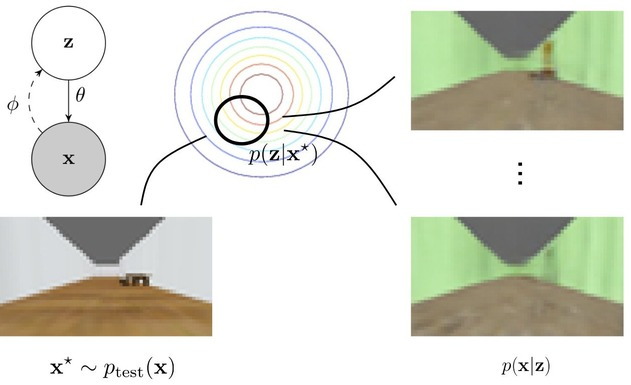

|
I am a Ph.D. student in EECS at UC Berkeley advised by Professor Pieter Abbeel and Professor Sergey Levine in the Berkeley Artificial Intelligence Research (BAIR) Lab and have interned at Skydio.
My main research goal is to develop algorithms that enable robots to operate in the real world. I am currently working on deep reinforcement learning for mobile robots. In the past, I have worked on trajectory optimization, planning under uncertainty, manipulation, and surgical robotics.

|
LaND: Learning to Navigate from Disengagements
Gregory Kahn, Pieter Abbeel, Sergey Levine
arXiv
[PDF][Website][Video]
One of the primary metrics for measuring progress for autonomous mobile robots has been how far can the robot travel before the robot fails and a human must intervene? Typically, these failures are then used to help the autonomy developers debug the software. However, this debugging process is highly nontrivial, especially for learning-based components. We investigate how to use these disengagements as a direct learning signal for navigation. Our LaND reinforcement learning algorithm learns a neural network model that predicts which actions lead to disengagements given the current sensory observation, and then at test time plans and executes actions that avoid disengagements. Our results demonstrate LaND can successfully learn to navigate in diverse, real world sidewalk environments.
|
|
|
Model-Based Meta-Reinforcement Learning for Flight with Suspended Payloads
Suneel Belkhale, Rachel Li, Gregory Kahn, Rowan McAllister, Roberto Calandra, Sergey Levine
arXiv
[PDF][Website][Video]
Transporting suspended payloads is challenging for autonomous aerial vehicles because the payload can cause significant and unpredictable changes to the robot's dynamics. These changes can lead to suboptimal flight performance or even catastrophic failure. We propose a meta-learning approach that "learns how to learn" models of altered dynamics within seconds of post-connection flight data. Our experiments demonstrate that our online adaptation approach outperforms non-adaptive methods on a series of challenging suspended payload transportation tasks.
|
|
|
BADGR: An Autonomous Self-Supervised Learning-Based Navigation System
Gregory Kahn, Pieter Abbeel, Sergey Levine
arXiv
[PDF][Website][Video][Code][Blog][News: IEEE Spectrum]
We investigate how to move beyond purely geometric-based navigation using a method that learns about physical navigational affordances from experience. Our approach, which we call BADGR, is an end-to-end learning-based mobile robot navigation system that can be trained with self-supervised off-policy data gathered in real-world environments, without any simulation or human supervision. BADGR can navigate in real-world urban and off-road environments with geometrically distracting obstacles. It can also incorporate terrain preferences, generalize to novel environments, and continue to improve autonomously by gathering more data.
|
|
|
Deep Neural Pilot on Skydio 2
Gregory Kahn, Abraham Bachrach, Hayk Martiros
[Blog][Video][News: IEEE Spectrum The Batch Import AI]
We approached the problem of training a deep neural network pilot through the lens of imitation learning, in which the goal is to train a model that imitates an expert. Although standard imitation learning worked fine in easy scenarios, we found it did not generalize well to difficult ones. How can we do better? Our insight is that we don’t have just any expert, we have a computational expert: the Skydio Autonomy Engine. Therefore instead of imitating the actions of the expert, we imitate the thought process of the expert. We call this approach Computational Expert Imitation Learning, or CEILing. Using CEILing and only 3 hours of off-policy data, we successfully trained a deep neural network pilot that is capable of filming while avoiding obstacles.
|

|
Generalization through Simulation: Integrating Simulated and Real Data into Deep Reinforcement Learning for Vision-Based Autonomous Flight
Katie Kang*, Suneel Belkhale*, Gregory Kahn*, Pieter Abbeel, Sergey Levine
ICRA 2019.
[PDF][Video][Code][News: VentureBeat]
The generalization capabilities of deep neural network control policies depends critically on the quantity and variety of data available for training. We investigate how data from both simulation and the real world can be combined in a hybrid deep reinforcement learning algorithm. Our method uses real-world data to learn about the dynamics of the system, and simulated data to learn a generalizable perception system that can enable the robot to avoid collisions using only a monocular camera. We demonstrate our approach on a real-world nano aerial vehicle collision avoidance task, showing that with only an hour of real-world data, the quadrotor can avoid collisions in new environments with various lighting conditions and geometry.
|
|

|
Robustness to Out-of-Distribution Inputs via Task-Aware Generative Uncertainty
Rowan McAllister, Gregory Kahn, Jeff Clune, Sergey Levine
ICRA 2019.
[PDF]
Real-world robotic systems must react intelligently to their observations, even in unexpected circumstances. We present a method for uncertainty-aware robotic perception that combines generative modeling and model uncertainty to cope with uncertainty stemming from out-of-distribution states. We demonstrate that our method of projecting out-of-distribution observations improves the performance of four standard Bayesian and non-Bayesian neural network approaches, offering more favorable trade-offs between the proportion of time a robot can remain autonomous and the proportion of impending crashes successfully avoided.
|
|
|
Composable Action-Conditioned Predictors: Flexible Off-Policy Learning for Robot Navigation
Gregory Kahn*, Adam Villaflor*, Pieter Abbeel, Sergey Levine
CoRL 2018.
[PDF][Video][Code]
We propose a framework that learns event cues from off-policy data, and can flexibly
combine these event cues at test time to accomplish different tasks. These event cue
labels are not assumed to be known a priori, but are instead labeled using learned
models, such as computer vision detectors, and then "backed up" in time using an
action-conditioned predictive model. We show that a simulated robotic car and a
real-world RC car can gather data and train fully autonomously without any human-provided
labels beyond those needed to train the detectors, and then at test-time be
able to accomplish a variety of different tasks.
|
|
|
Learning Image-Conditioned Dynamics Models for Control of Under-actuated Legged Millirobots
Anusha Nagabandi, Guangzhao Yang, Thomas Asmar, Ravi Pandya, Gregory Kahn, Sergey Levine, Ronald S. Fearing
IROS 2018 [best paper finalist].
[PDF][Video][Blog]
Millirobots are a promising robotic platform for many applications due to their small size and low manufacturing costs, but are difficult to control. We present a sample-efficient learning based approach in which a model of the dynamics is learned from data, and then the model is used by an MPC controller. Furthermore, by leveraging neural network models, our approach allows for these predictions to be directly conditioned on camera images, which allows the robot to predict how different terrains might affect its dynamics. We show that with 17 minutes of random data collected with the VelociRoACH millirobot, the VelociRoACH can accurately follow trajectories at higher speeds and on more difficult terrains than a differential drive controller.
|
|
|
Self-supervised Deep Reinforcement Learning with Generalized Computation Graphs for Robot Navigation
Gregory Kahn, Adam Villaflor, Bosen Ding, Pieter Abbeel, Sergey Levine
ICRA 2018.
[PDF][Video][Code][Poster][Slides]
We propose a generalized computation graph that subsumes value-based model-free methods and model-based methods, and instantiate this graph to form a navigation model that learns from raw images and is sample efficient. Our simulated car experiments explore the design decisions of our navigation model, and show our approach outperforms single-step and N-step double Q-learning. We also evaluate our approach on a real-world RC car and show it can learn to navigate through a complex indoor environment with a few hours of fully autonomous, self-supervised training.
|
|
|
Neural Network Dynamics for Model-Based Deep Reinforcement Learning with Model-Free Fine-Tuning
Anusha Nagabandi, Gregory Kahn, Ronald S. Fearing, Sergey Levine
ICRA 2018.
[PDF][Video][Blog][Code]
We demonstrate that medium-sized neural network models can be combined with MPC to achieve excellent sample complexity in a model-based RL algorithm, producing stable and plausible gaits to accomplish various complex locomotion tasks. We also propose using deep neural network dynamics models to initialize a model-free learner. We empirically demonstrate that this resulting hybrid algorithm can drastically accelerate model-free learning on several MuJoCo locomotion tasks.
|

|
Uncertainty-Aware Reinforcement Learning for Collision Avoidance
Gregory Kahn, Adam Villaflor, Vitchyr Pong, Pieter Abbeel, Sergey Levine
arXiv
[PDF][Video][Slides]
Practical deployment of reinforcement learning methods must contend with the fact that the training process itself can be unsafe for the robot. In this paper, we consider the specific case of a mobile robot learning to navigate an a priori unknown environment while avoiding collisions. We present an uncertainty-aware model-based learning algorithm that estimates the probability of collision together with a statistical estimate of uncertainty. We evaluate our method on a simulated and real-world quadrotor, and a real-world RC car.
|

|
PLATO: Policy Learning using Adaptive Trajectory Optimization
Gregory Kahn, Tianhao Zhang, Sergey Levine, Pieter Abbeel
ICRA 2017.
[PDF][Video][Slides][Poster]
We propose PLATO, an algorithm that trains complex neural network policies using an adaptive variant of model-predictive control (MPC)
to generate the supervision. We prove that our adaptive MPC teacher produces supervision that leads to good long-horizon performance
of the resulting policy, and empirically demonstrate that MPC can avoid dangerous on-policy actions in unexpected situations during training.
|
|
|
Occlusion-Aware Multi-Robot 3D Tracking
Karol Hausman, Gregory Kahn, Sachin Patil, Joerg Mueller, Ken Goldberg, Pieter Abbeel, Gaurav Sukhatme
IROS 2016.
We introduce an optimization-based control approach that enables a team of robots to cooperatively
track a target using onboard sensing. The robots are
required to estimate their own positions as well as
tracking the target by reasoning about occlusions.
We evaluate our approach in a number of experiments in which
we simulate a team of quadrotor robots flying in
three-dimensional space to track a moving target on the ground.
|

|
Learning Deep Control Policies for Autonomous Aerial Vehicles with MPC-Guided Policy Search
Tianhao Zhang, Gregory Kahn, Sergey Levine, Pieter Abbeel
ICRA 2016.
[PDF][Video]
This paper presents a method for training neural network policies for autonomous aerial vehicles using model-predictive control (MPC) and
guided policy search. A major challenge in applying reinforcement learning to aerial vehicles is the possibility of critical failure
during training. To that end, MPC is used to guide off-policy learning with guided policy search. The final neural network policy provides
runtime efficiency and generalization, and removes the need for explicit state estimation at test time by using raw sensor inputs.
|
|
|
Information-Theoretic Planning with Trajectory Optimization for Dense 3D Mapping
Benjamin Charrow, Gregory Kahn, Sachin Patil, Sikang Liu, Ken Goldberg, Pieter Abbeel, Nathan Michael, Vijay Kumar
RSS 2015.
[PDF]
We propose an information-theoretic planning approach that enables mobile robots to autonomously construct dense 3D maps using a two stage approach. First, we generate a candidate set of trajectories using a combination of global planning and generation of local motion primitives. Second, we employ a gradient-based optimization to locally refine the Cauchy-Schwarz quadratic mutual information (CSQMI) objective. We evaluated our approach through a series of real-world experiments with a ground robot and simulations with an aerial robot.
|
|
|
Active Exploration using Trajectory Optimization for Robotic Grasping in the Presence of Occlusions
Gregory Kahn, Peter Sujan, Sachin Patil, Shaunak D. Bopardikar, Julian Ryde, Ken Goldberg, Pieter Abbeel
ICRA 2015.
[PDF][Video]
We consider the task of actively exploring unstructured environments to facilitate robotic grasping of occluded objects. The objective is to plan the motion of hte sensor in order to search for feasible grasph handles that lie within occluded regions of the map. We evaluated our approach by actively exploring and attempting 300 grasps with an RGB-D sensor mounted on the end effector of a PR2 robot.
|

|
Scaling up Gaussian Belief Space Planning through Covariance-Free Trajectory Optimization and Automatic Differentiation
Sachin Patil, Gregory Kahn, Michael Laskey, John Schulman, Ken Goldberg, Pieter Abbeel
WAFR 2014.
[PDF]
Belief space planning provides a principled framework to compute motion plans that explicitly gather information from sensing, as necessary, to reduce uncertainty about the robot and the environment. We consider the problem of planning in Gaussian belief spaces, which are parameterized in terms of mean states and covariances describing uncertainty. Our experiments suggest that our method can solve planning problems in 100 dimensional state spaces and obtain computational speedups of 400x over related trajectory optimization methods.
|
|
|
Autonomous Multilateral Debridement with the Raven Surgical Robot
Ben Kehoe, Gregory Kahn, Jeffrey Mahler, Jonathan Kim, Alex Lee, Anna Lee, Keisuke Nakagawa, Sachin Patil, W. Douglas Boyd, Pieter Abbeel, Ken Goldberg
ICRA 2014.
[PDF][Video]
We present an implemented automated surgical debridement system that uses the Raven, an open-architecture surgical robot with two cable-driven 7 DOF arms. Our system combines stereo vision for 3D perception, trajopt, an optimization-based motion planner, and model predictive control (MPC).
|
Research Support
|
|
National Science Foundation Graduate Research Fellowship, 2016-present
|
|